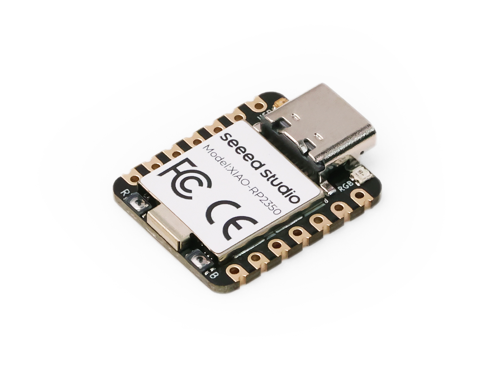

Seeed Studio XIAO RP2350
The Seeed Studio XIAO RP2350 is a general purpose board supplied by Seeed Studio and it is compatible with the Raspberry Pi RP2350 ecosystem, sharing the same MCU as Raspberry Pi Pico 2.

Features
Raspberry Pi RP2350, ARM® Dual Cortex-M33 @ 150MHz, FPU
520kB SRAM, 2MB Flash
Security: OTP, Secure Boot, Arm TrustZone
USB Type-C interface
19 Pins:3x Analog,19x Digital, 2x I²C, 2x UART, 2x SPI, All PWM
1 user LED, 1 power LED，1 RGB LED (WS2812)
1 RESET button, 1 BOOT button
Serial Console
By default, a serial console appears on pins 6 (TX GPIO) and pin 7 (RX GPIO). This console runs a 115200-8N1. The board can be configured to use the USB connection as the serial console.
User LED
The USER LED, the yellow LED on the XIAO RP2350, is connected to GPIO25/D19 according to the schematic diagram. The USER LED will light up when set to a low level and turn off when set to a high level.
Pin Mapping
Pads numbered anticlockwise from USB connector.
Pad |
Signal |
Notes |
|---|---|---|
0 |
GPIO26 |
D0/A0 |
1 |
GPIO27 |
D1/A1 |
2 |
GPIO28 |
D2/A2 |
3 |
GPIO5 |
D3/A3 |
4 |
GPIO6 |
D4/SDA |
5 |
GPIO7 |
D5/SCL |
6 |
GPIO0 |
D6/Default TX for UART0 serial console |
7 |
GPIO1 |
D7/Default RX for UART0 serial console |
8 |
GPIO2 |
D8/SCK |
9 |
GPIO4 |
D9/MISO |
10 |
GPIO3 |
D10/MOSI |
11 |
3V3 |
Power output to peripherals |
12 |
Ground |
|
13 |
VIN |
+5V Supply to board |
Power Supply
The working voltage of the MCU is 3.3V. Voltage input connected to general I/O pins may cause chip damage if it’s higher than 3.3V.
Installation
Configure and build NuttX:
$ git clone https://github.com/apache/nuttx.git nuttx
$ git clone https://github.com/apache/nuttx-apps.git apps
$ cd nuttx
$ make distclean
$ ./tools/configure.sh xiao-rp2350:nsh
$ make V=1
2. Connect the Seeed Studio XIAO RP2350, and enter bootloader mode, once the board is detected as a USB Mass Storage Device, copy “nuttx.uf2” into the device.
To access the console, TX and RX pins must be connected to the device such as USB-serial converter.
Configurations
nsh
Basic NuttShell configuration (console enabled in UART0, at 115200 bps).
usbnsh
Basic NuttShell configuration using CDC/ACM serial (console enabled in USB Port, at 115200 bps).
combo
This configuration enabled NuttShell via Serial and enabled led, gpio and ws2812 examples:
Testing leds:
$nsh> leds
leds_main: Starting the led_daemon
leds_main: led_daemon started
led_daemon (pid# 3): Running
led_daemon: Opening /dev/userleds
led_daemon: Supported LEDs 0x01
led_daemon: LED set 0x01
nsh> led_daemon: LED set 0x00
led_daemon: LED set 0x01
led_daemon: LED set 0x00
led_daemon: LED set 0x01
led_daemon: LED set 0x00
Testing gpios:
PIN/GPIO |
Mode |
Device |
|---|---|---|
D0/P0.02 |
Input |
/dev/gpio0 |
D2/P0.28 |
Output |
/dev/gpio1 |
D1/P0.03 |
Input |
/dev/gpio2 |
nsh> gpio -w 1 /dev/gpio26
Driver: /dev/gpio26
Interrupt pin: Value=0
Verify: Value=0
nsh> gpio /dev/gpio27
Driver: /dev/gpio27
Input pin: Value=0
nsh> gpio /dev/gpio27
Driver: /dev/gpio27
Input pin: Value=1
nsh> gpio -o 1 /dev/gpio28
Driver: /dev/gpio28
Output pin: Value=0
Writing: Value=1
Verify: Value=1
nsh> gpio -o 0 /dev/gpio28
Driver: /dev/gpio28
Output pin: Value=1
Writing: Value=0
Verify: Value=0
Testing ws2812:
$nsh> ws2812